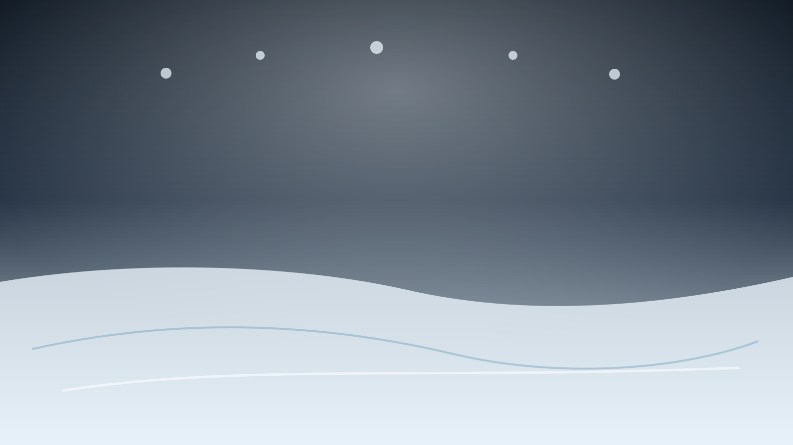
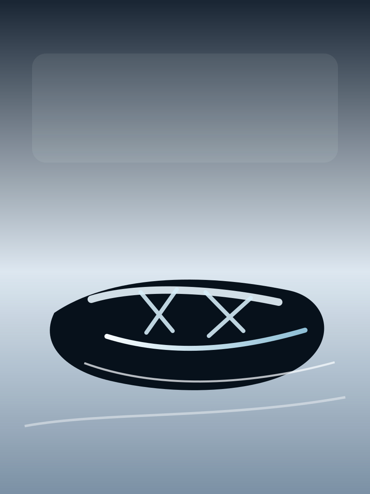
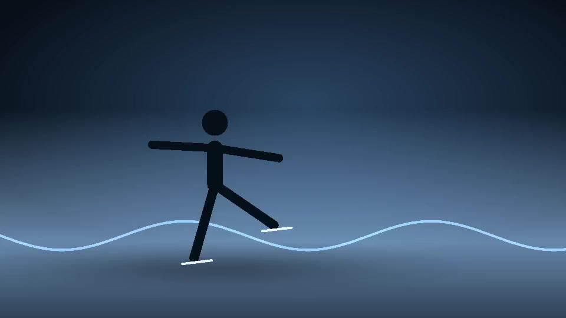

Short program
Compact, fast, and precise. A first impression built from restraint and attack.
Figure skater
A quiet study of speed, balance, fear, and beauty in figure skating.
Life on ice

Saga Hallberg skates for the feeling that arrives after repetition: the clean edge, the held landing, the second when the music and the blade become one movement.
Her work is built from early ice, cold hands, patient drills, and the kind of focus that turns a difficult element into something that looks weightless.
Each program is treated like a living piece: sharpened in practice, softened by music, and carried by trust in the edge.

Compact, fast, and precise. A first impression built from restraint and attack.
Longer lines, deeper breath, and the courage to let quiet sections stay quiet.
The private version: no costume, no lights, just repetition until the body trusts the path.
One
clean edge at a time
The measure that matters most before any score appears.
Figure skating looks effortless only after the difficult parts have been met hundreds of times.
Empty ice makes every correction audible. Saga returns to that silence because it tells the truth.
The best moments arrive when power stops looking like effort and starts looking like flow.
Passion is not the perfect run-through. It is choosing the next attempt before the ice has stopped ringing.
The ice asks for everything, then gives back one perfect second.
Visual studies of the rink, the blade, and the private seconds before a program begins.

This page is a tribute to the part of figure skating that cannot be reduced to scores: the patience, the ritual, the cold air, and the feeling of landing in time with the music.
SH
Every mark on the ice is a sentence. Some are sharp. Some are unfinished. The beautiful ones disappear first.